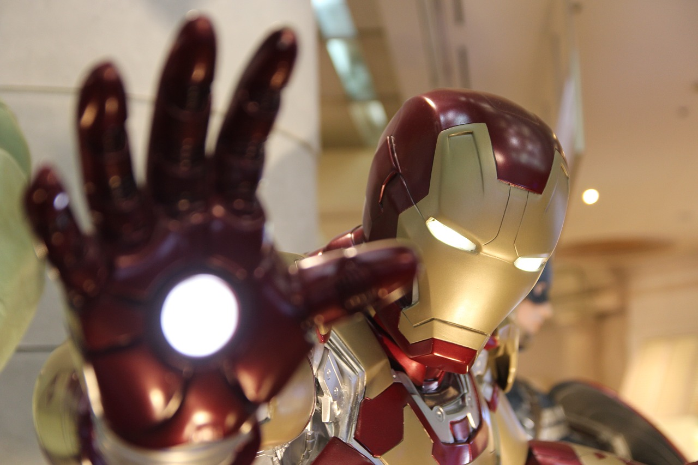

Nom:Stark
Prénoms:Anthony Edward « Tony »
Naissance:Long Island(New York)
Mensurations : 1,85 mètre pour 100 kg sans armure et 1,95 mètres pour 192 kg en armure
Parents: Son père se nommait Howard Anthony Stark et sa mère Maria Collins Carbonell Stark et à leur mort, lors d’un tragique accident, Tony a hérité de leur compagnie, Stark Industries, qui est l’une des plus importantes corporations américaines.
La naissance de Iron-Man
Génie, inventeur multimilliardaire, ses principaux hobbies sont les voitures, les soirées arrosées, mais surtout les femmes. Il mène une vie oisive mais tout change lorsqu’il est sévèrement blessé et enlevé par des terroristes qui le forcent à construire une arme de destruction massive. Tony met alors au point une puissante armure qu’il utilise pour d’évader mais aussi pour éviter de succomber à ses blessures. A son retour, il est transformé et décide d’utiliser ses formidables ressources pour combattre le crime et ceci sous le nom d’Iron Man. Avec l’aide de ses alliés, Pepper Potts, Happy Hogan et James Rhodes, il préserve longtemps son secret en tant que War Machine avant de révéler la vérité au monde entier et ne cesse de protéger son entreprise mais aussi la population américaine. Tony rejoint également d’autres super-héros et ensemble, ils fondent l’équipe de super-héros appelée les Avengers. Tony devient l’un des membres les plus emblématiques de cette équipe tandis qu’il ne cesse de développer ses armures et de combattre des menaces telles que Spymaster, Dynamo Pourpe ou encore le Mandarin, son plus redoutable ennemi, tout en veillant à ce que sa technologie ne soit pas dérobée et utilisée à de mauvaises fins. Parallèlement, Tony doit aussi veiller sa santé car pendant longtemps il souffre de problèmes cardiaques.
La particularité de notre héros
Tony est considéré comme l'homme aux armures, chacune de ses armures a un rôle bien précis. En effet, Iron-man avant le début de chaque mission, analyse rapidement la situation afin de savoir laquelle de ses armures correspond. Pas besoin, d'en dire plus, découvrez cette vidéo où sont présentés les joujous de l'homme de fer.
Grâce à son armure, Tony a la possibilité de voler dans les airs, est doté d'une force surhumaine et peut propulser des projectiles. Mais ce n'est pas tout, il a des reflexes surhumains qui combinés à sa grande capacité d'ananlyse font de lui est un héros de terrain hors-pair.
Les apparitions de notre héros au cinéma
Au total trois films sont dédiés aux aventures d'Iron-Man respectivement sortis en 2008, 2010 et 2013. Ils sont tous disponibles sur la plateforme Disney +. Parrallèlement, il appariet dans les films dédiés aux Avengers dont il est un membre important. Ainsi, Tony a à son compte, une dizaine d'apparitons au cinéma.QUELLE STAR...!
Voici quelques-unes de ces affiches:
Pour acheter vos articles de super-fan...
De nombreux magasins sont disponibles en ligne et un peu partout dans le monde. Si vous êtes dans l'Hexagone, nous avons repertorié quelques bons-plans pour vous :)